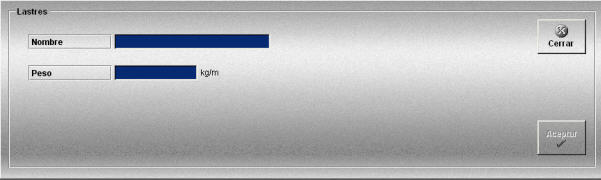

Lastres
La creación y edición de lastres se realiza mediante la siguiente ventana.

Esta ventana permite definir los lastres que podrán ser añadidos a los artes de arrastre definidos.
Se definen los siguientes datos:
Nombre: Nombre del lastre.
Formato: caracteres alfanuméricos.
Peso: Peso del lastre.
Unidades: kilogramos
Rango: 1.00- 150.00